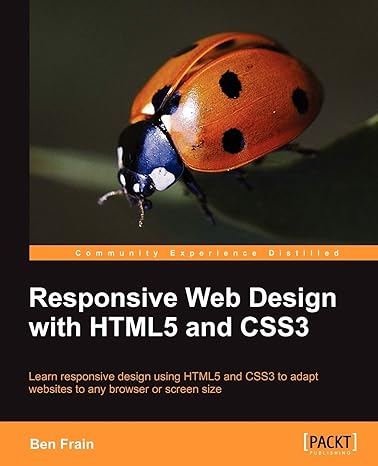
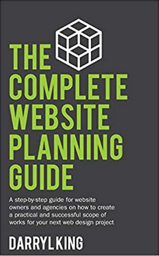
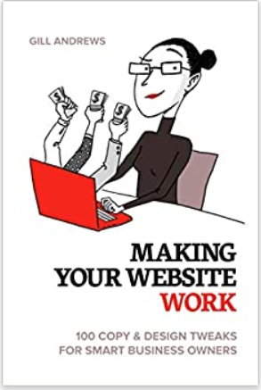

Lunevedy Cafe Bakery
Our friendly baristas are waiting to pour your favourite beverage. We use only expertly selected coffee beans and tea leaves.
Leverage agile frameworks to provide a robust synopsis for high level overviews to foster collaborative thinking.
Our friendly baristas are waiting to pour your favourite beverage. We use only expertly selected coffee beans and tea leaves.

Level up your look with our ever-changing selection of on-trend brands. We ship to almost everywhere in the world.

Supercharge your web design career with the Lunevedy: JavaScript for Beginners training course.

Portugal's hilly, coastal capital city. Enjoy the pastel-coloured buildings, the cobbled streets, and the custard tarts.